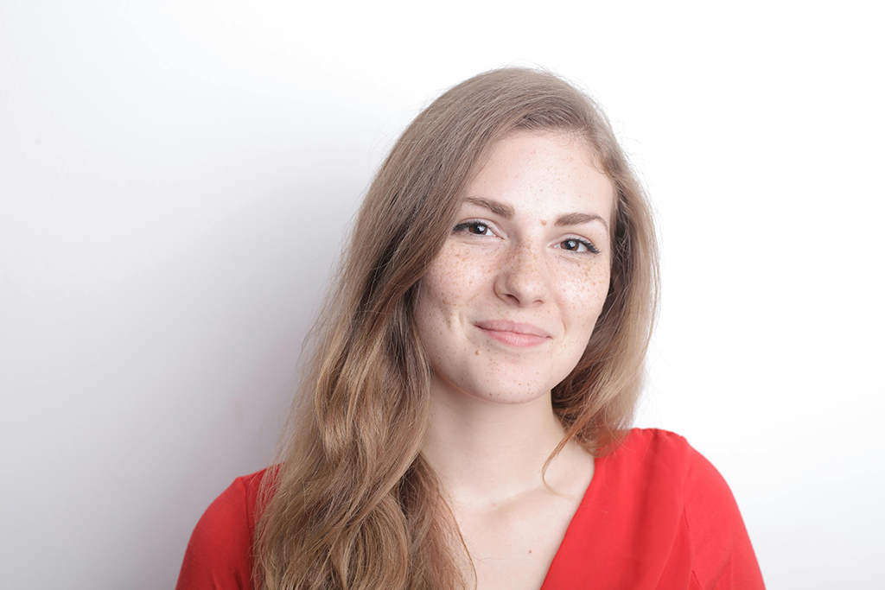

<section>
    <picture>
        <source srcset="
                ../assets/images/maria-lopez-500.webp   500w,
                ../assets/images/maria-lopez-768.webp   768w,
                ../assets/images/maria-lopez-1024.webp 1024w
              " type="image/webp" />
        
        <!--Foto de Andrea Piacquadio: https://www.pexels.com/es-es/foto/close-up-retrato-foto-de-mujer-sonriente-en-top-rojo-posando-delante-de-un-fondo-blanco-3762952/ -->
    </picture>
    <div>
        <h3>María López (Andalucía)</h3>
        <p>
            Cocinera apasionada por la cocina de cuchara, defensora del
            recetario tradicional andaluz.
        </p>
    </div>
</section>